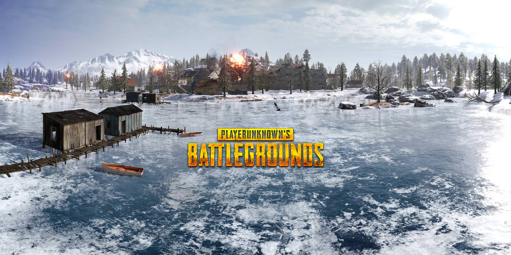
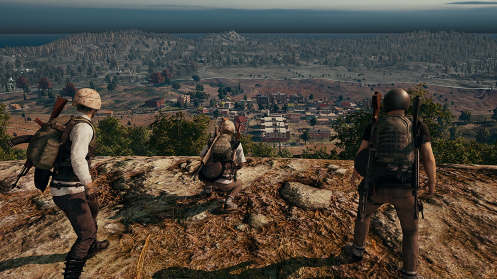
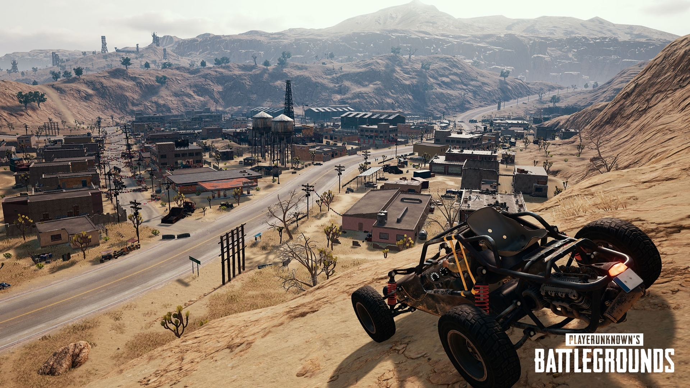
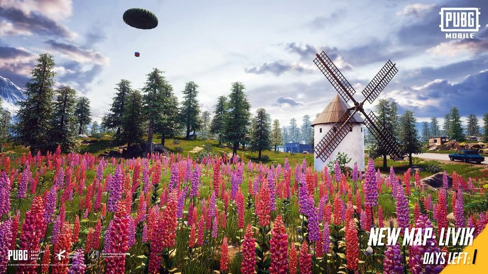

"Victor's Corner: A Glimpse into My World"
"Step into Victor's realm, where thoughts, dreams, and aspirations converge. This space is a window into my interests, musings, and the things that define me. Whether it's a snippet of daily life or a cherished goal, explore the facets that make Victor who he is. Feel free to journey through this digital corner, where every click unveils a new layer of my narrative. Your curiosity is the compass, and this is your invitation to navigate the labyrinth of Victor's world."
Sanhok

Boot Camp: A popular and high-traffic area on the map, known for intense firefights and loot. Paradise Resort: A large resort area with multiple buildings and good loot opportunities. Ruins: An ancient temple complex with various rooms and passages, often a hot spot for engagements. Cave: An underground cave system with loot and potential ambush points. Docks: A coastal area with docks and warehouses, offering loot and strategic positions. Quarry: An open area with large rocks and high terrain, providing a mix of close-quarters combat and sniping opportunities. Ha Tinh: A town area with a variety of buildings and loot opportunities.
Vikendi
Snow Theme: Vikendi is characterized by its snow-covered landscape. The map features a winter setting with snowy terrain, frozen lakes, and icy areas. Diverse Terrain: Vikendi offers a mix of terrains, including open fields, dense forests, mountains, and urban areas. Players need to adapt their strategies based on the varied landscape. Cosmodrome: The Cosmodrome is a unique point of interest on Vikendi. It includes a rocket launch site and various structures. It is a popular drop location for players looking for high-tier loot. Dino Park: Dino Park is an amusement park with dinosaur-themed attractions. It provides players with loot opportunities and is often a busy area due to its popularity. Castle: Vikendi features a large castle located on a hill. It is a prominent structure and can be a strategic location for players seeking high-ground advantages. Hot Springs: Hot Springs is an area with geothermal features, including hot pools. It's an interesting and unique part of the map with potential loot. Caves: Vikendi has underground cave systems that players can explore for loot and tactical advantages.
Erangel
Island Setting: Erangel is set on an island in the Black Sea, featuring a mix of urban and rural environments. Diverse Terrain: The map offers a diverse range of terrains, including open fields, forests, hills, mountains, and coastal areas. This diversity requires players to adapt their strategies based on their surroundings. Major Cities: Erangel includes several major cities, each with its unique characteristics. Some of these cities include Pochinki, Yasnaya Polyana, and Georgopol. These urban areas are popular drop locations with high loot potential but also high player density. Military Base: The Military Base is a high-risk, high-reward area with excellent loot. It often becomes a hot spot for intense early-game battles. School: The School is another iconic location known for its intense firefights. It is a multi-story building with a high chance of finding valuable loot. Mylta Power: Mylta Power is a location with a large power plant, providing players with the opportunity to find strong weapons and equipment.
Miramar
Desert Landscape: Miramar is set in a desert landscape, featuring vast open areas, rocky terrain, and arid landscapes. The map's theme is a contrast to the green and forested environment of Erangel. Urban Areas: Miramar includes several urban areas and cities, such as Los Leones, Hacienda del Patrón, and Pecado. These areas offer high-quality loot but also attract a higher number of players, leading to intense firefights. Haciendas: Haciendas is a notable location known for its multi-story buildings and high-quality loot. It is often a popular drop spot for players seeking good equipment. Crater Fields: Miramar has areas with large craters, providing cover and unique terrain for battles. These areas can be strategic for players who want to use the landscape to their advantage. Power Grid: Similar to Erangel, Miramar has a Power Grid location with a large power plant where players can find valuable loot.
Livik
Size: Livik is significantly smaller than the other maps in PUBG Mobile, making it well-suited for faster-paced matches with shorter playtimes. Terrain: The map features a variety of terrain, including open fields, hills, a waterfall, and an ancient castle. The diverse landscape provides different tactical options for players. Dynamic Environment: Livik has a dynamic environment with changes in weather, including rain and sunny conditions. This dynamic weather can affect visibility and gameplay. Unique Structures: Livik includes unique structures like the ancient castle, which can be an interesting focal point for battles. The map is designed to encourage close-quarters combat and faster engagements. Vehicle Variety: Livik features a variety of vehicles suitable for its smaller size, including a two-seater off-road vehicle called the Monster Truck. Secret Cave: Livik includes a secret cave system that players can discover. The cave adds an element of exploration and surprise to the gameplay. Respawn Mechanic: Livik incorporates a respawn mechanic, allowing players to re-enter the match after being eliminated. This feature contributes to the fast-paced nature of the map.